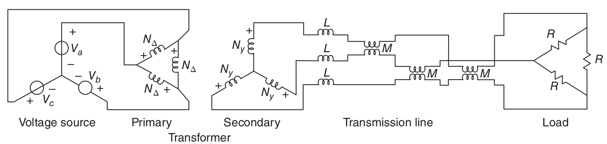
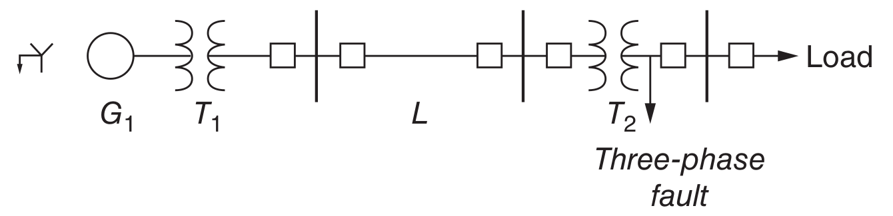
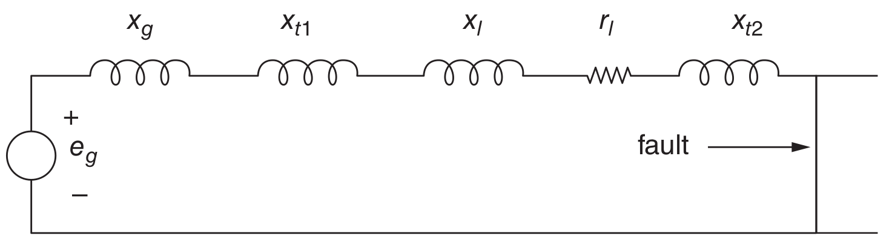

Polyphase Lines and Single-phase Equivalents#
Although the three phases in a balanced polyphase system are physically interconnected they may be considered as three single-phase systems. This is reinforced by the equivalence between wye- and delta-connected sources and impedances. One more step is required to show that single-phase equivalence has merit, and this concerns situations in which the phases have mutual coupling.
Polyphase Transmission and Distribution Lines#
Lines are system elements as transmission or distribution lines: overhead wires, cables or in-plant buswork. Such elements have impedance, so that there is some voltage drop between the two ends of the lines (called sending and receiving ends). This impedance is more than just conductor resistance: the conductors have both self and mutual inductance because currents in the conductors make magnetic flux which, in turn, is linked by all conductors of the line.
The phase conductors are arranged as parallel conductors in bundles. These wires are supported by insulators. In many cases these insulators are actually strings of individual plates, often made of ceramic material, arranged to have a very long surface between the conductor and ground. Usually there are also accompanying ground wires that serve to carry the inevitable but usually small neutral currents that result from system unbalance and fault currents, and that partially shield the active conductors from lightning.
A schematic view of a line is shown Fig. 114. Actually, only the inductance components of line impedance are shown, since they are the most interesting parts of line impedance. A simplifying approximation is made that the mutual inductance is the same for all pairs of conductors.
{kind=link}
Fig. 114 Schematic of a balanced three-phase line with mutual coupling.#
Working in complex amplitudes, it is possible to write the voltage drops for the three phases by
If the currents form a balanced set:
Then the voltage drops are
In this case, an apparent inductance, suitable for the balanced case, \(L_\ell\), describes the behaviour of one phase in terms of its own current. It is most important to note that this inductance is a valid description of the line only if (8) holds.
Example 5
A three-phase resistive load is connected to a balanced three-phase source through a transformer connected in delta–wye and a polyphase line, as depicted below. Calculate power dissipated in the load resistors.
{kind=link}
The three-phase voltage source satisfies:
We apply a succession of simple transformations. First, the delta-connected resistive load is converted to its equivalent wye with \(R_Y = R/3\).
Next, since the problem is balanced, the self- and mutual inductances of the line are directly equivalent to self-inductances in each phase of \(L_\ell = L - M\). Now, the transformer secondary is facing an impedance in each phase of
The delta-wye transformer has a voltage ratio of
On the primary side of the transformer, the line and load impedance is
where
The magnitude of current flowing in each phase of the source is
Power dissipation in each phase is
Total power dissipated is three times the single-phase dissipation.
Per-unit System#
Per-unit systems are nothing more than normalisations of voltage, current, impedance, and power. These normalisations of system parameters are used because they provide simplifications in many network calculations. As we will discover, while certain ordinary parameters have very wide ranges of value, the equivalent per-unit parameters fall in a much narrower range. This helps in understanding how certain types of system behave and looking past the “numbers”.
Normalisation of Voltage and Current#
The basis for the per-unit system of notation is the expression of voltage and current as fractions of base levels. Thus the first step in setting up a per-unit normalisation is to pick base voltage and current.
Consider a network where an impedance \(\mathbf{Z}\) is connected to a voltage source \(\mathbf{V}\), the complex amplitudes of voltage and current satisfy
Start by defining two base quantities, \(V_B\) for voltage and \(I_B\) for current. In many cases, these will be chosen to be nominal or rated values of the generators or transformers in the network (or the portion that is being studied). For generating plants, for example, it is common to use the rated voltage and rated current of the generator as base quantities. In other situations, such as system stability studies, it is common to use a standard, system-wide base system.
The per-unit voltage and current are
Consequently, the per-unit impedance is
where \(\mathbf{Z}_B\) is a base impedance and is defined as
This will also lead to the definition of a base power, which for a single phase system is
where \(V_B\) and \(I_B\) are RMS values.
As long as normalisation is carried out in a consistent way, there is no ambiguity in per-unit notation, that is, peak quantities normalised to peak base quantities will be the same, in per-unit, as RMS quantities normalised to RMS bases.
Three-phase Systems#
When describing polyphase systems, we have the choice of using either line–line or line–neutral voltage and line current or current in delta equivalent loads. In order to keep straight analysis in ordinary variables, it is necessary to carry along information about which of these quantities is being used. There is no such problem with per-unit notation. We may use as base quantities either line to neutral voltage \(V_{B,l-n}\) or line to line voltage \(V_{B,l-l}\). Taking the base current to be line current \(I_{Bl}\), we may express base power as
Because line–line voltage is, under normal operation, \(\sqrt{3}\) times line–neutral voltage, equivalent statement is
If base impedance is expressed by line–neutral voltage and line current (this is the common convention, but is not required),
Then, base impedance is, written in terms of base power,
Note that a single per-unit voltage applies equally well to line–line, line–neutral, peak, and RMS quantities. For a given situation, each of these quantities will have a different ordinary value, but there is only one per-unit value.
Networks with Transformers#
One of the most important advantages of the use of per-unit systems arises in the analysis of networks with transformers. Properly applied, a per-unit normalisation will cause nearly all ideal transformers to disappear from the per-unit network, thus greatly simplifying the analysis.
Consider an ideal transformer with two windings and turn ratio of \(N\) where
Normalised to base quantities on the two sides of the transformer, the per-unit voltage and current are
Now, note that if the base quantities are chosen as
then \(\mathbf{v}_1=\mathbf{v}_2\) and \(\mathbf{i}_1 =\mathbf{i}_2\). In other words if the base quantities are selected in a way so that they related to each other as if they had been processed by the transformer, then the per-unit values of primary and secondary voltages and currents will be the same.
This observation highlights a general rule in setting up per-unit normalisations for systems with transformers. Each segment of the system should have the same base power. Base voltages transform according to transformer voltage ratios. For three-phase systems, of course, the voltage ratios differ from the physical turns ratios by a factor of \(\sqrt{3}\) if delta-wye or wye-delta connections are used. It is, however, the voltage ratio that must be used in setting base voltages.
Transforming from One Base to Another#
Often data such as transformer leakage inductance is given in per-unit terms, on some base (perhaps the unit’s rating), while in order to do a system study it is necessary to express the same data in per-unit in some other base (perhaps a unified system base). It is always possible to do this by the two-step process of converting the per-unit data to its ordinary form, then re-normalising it in the new base. However, it is easier to just convert it to the new base in the following way. Note that impedance in Ohms (ordinary units) is given by
Here, of course, \(\mathbf{z}_1\) and \(\mathbf{z}_2\) are the same per-unit impedance expressed in different bases. This could be written as
This yields a convenient rule for converting from one base system to another:
Example 6 (Fault Study)
A one-line diagram is a way of conveying a lot of information about a power system without becoming cluttered with repetitive pieces of data. Drawing all three phases of a system would involve quite a lot of repetition that is not needed for most studies. Further, the three phases can be reconstructed from the one-line diagram if necessary. It is usual to use special symbols for different components of the network.
{kind=link}
The following table provides the necessary information for making sense of the diagaram:
Symbol |
Component |
Base \(P_B\), (MVA) |
Base \(V_B\) (kV) (line-to-line) |
Impedance (per-unit) |
|---|---|---|---|---|
\(G_1\) |
Generator |
200 |
13.8 |
\(\jmath 0.18\) |
\(T_1\) |
Transformer |
200 |
13.8/138 |
\(\jmath 0.12\) |
\(L\) |
Transmission Line |
100 |
138 |
\(0.02+\jmath 0.05\) |
\(T_2\) |
Transformer |
50 |
138/34.5 |
\(\jmath 0.08\) |
A three-phase fault is assumed to occur on the 34.5 kV side of the transformer \(T_2\). This is a symmetrical situation, so that only one phase must be represented. The per-unit impedance diagram is shown below. It is necessary to proceed now to determine the value of the components in this circuit.
{kind=link}
First, it is necessary to establish a uniform base per-unit value for each of the system components. In this case, all of the parameters are put into a base power of 100 MVA and voltage bases of 138 kV on the line, 13.8 kV at the generator, and 34.5 kV at the fault.
The total impedance is
Now, if \(e_g\) is equal to one per-unit (generator internal voltage equal to base voltage), then the per-unit current is
This may be translated back into ordinary units by getting base current levels, which are
on the base at the generator: \(I_{B,G} = \dfrac{100 \text{MVA}}{\sqrt{3} \times 13.8 \text{kV}} = 4.18 \text{kA}\).
on the line base: \(I_{B,L} = \dfrac{100 \text{MVA}}{\sqrt{3} \times 138 \text{kV}} = 418\).
on the base at the fault: \(I_{B,F} = \dfrac{100 \text{MVA}}{\sqrt{3} \times 34.5 \text{kV}} = 1.67 \text{kA}\).
Then the actual fault currents are:
at the generator: \(|\mathbf{I}_f| = 11578.6 \text{A}\)
on the transmission line: \(|\mathbf{I}_f|=1157.86 \text{A}\)
at the fault: \(|\mathbf{I}_f| = 4625.9 \text{A}\)